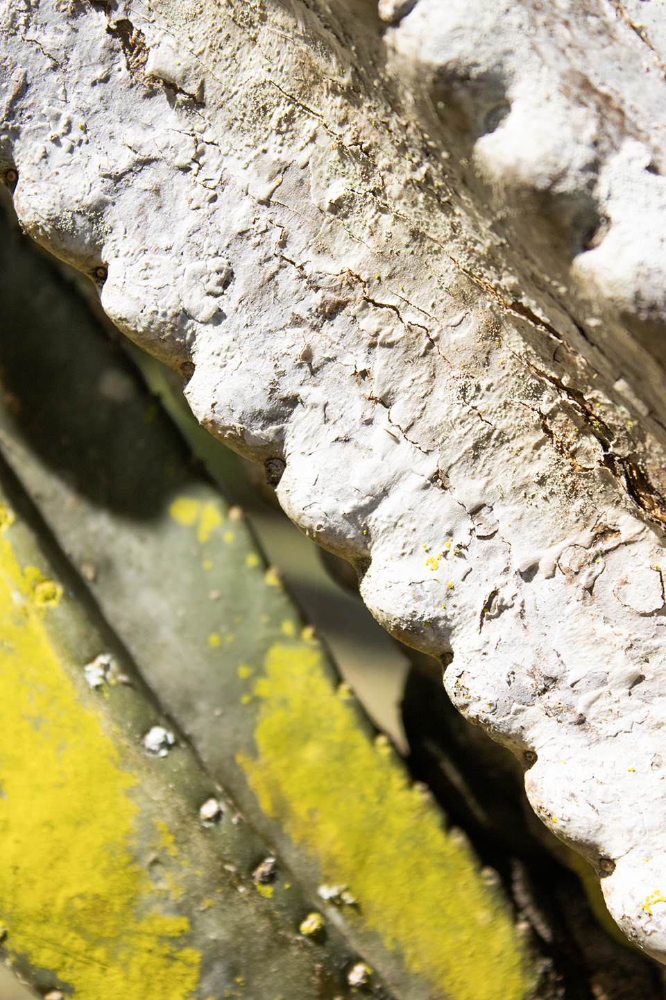

Portfolio

Lovely lonely moss, I saw this and thought it was quite unusual

A beautiful Great Blue Heron
I love to capture things at different perspectives.
A beautiful orange
I love to find small nature
A lone Ibis with a couple of Common Gallinules

This is a picture of part of a catus.
Here is a knot hole in a tree.
An interesting perspective of a swan, looks like it was posing for the photo.
Small nature again

love the colors of nature!
Another small nature, my favorite type of photography!